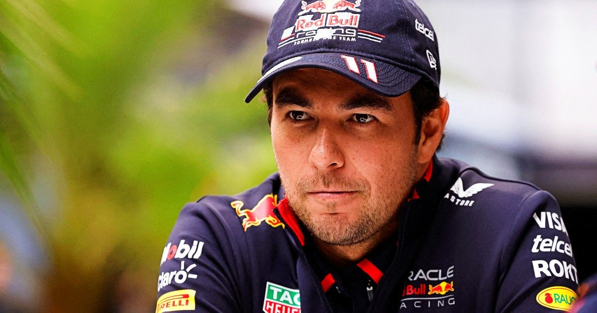
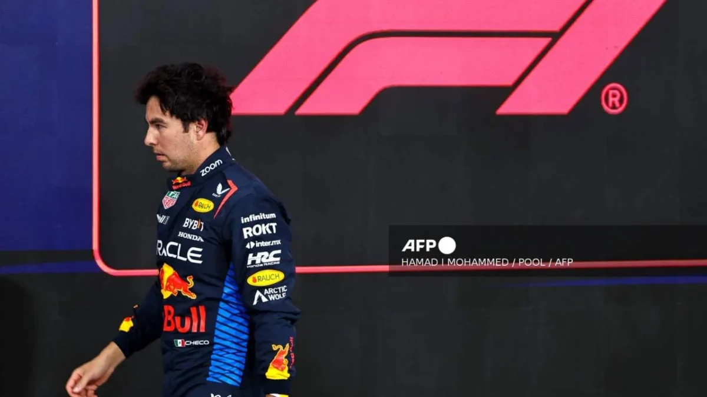

Checo Pérez revela qué hará en 2025 y la fecha que anunciará si vuelve a F1

Sergio Pérez, ex piloto de Red Bull en Fórmula 1, habló en una conferencia que ofreció en el marco de la Feria de León 2025.
El tapatío destacó que ha sido su comienzo de año ya sin formar parte de Red Bull y de la Fórmula 1 luego de que en diciembre, la escudería de las bebidas energéticas le diera las gracias pese a que le restaba todavía una temporada más de contrato.
"Estoy disfrutando muchísimo, tengo mucha ilusión de lo que viene este año. "Estoy muy tranquilo, muy tranquilo, muy contento disfrutando mucho a mis hijos, mi familia, mis amigos. Creo que por fin ya voy a poder viajar porque si bien en estos años he recorrido el mundo ha sido sin conocerlo", destacó.

A pesar del duro golpe de dejar la máxima competición de automovilismo del mundo, Pérez reconoció disfrutar de su nueva etapa, en la que tras varios años puede convivir con su familia.
"Mi mayor motivación ahora es llevar a mis hijos por un buen camino y estar más presente en sus vidas. Me ilusiona muchísimo estar con mi familia porque en la Fórmula Uno solo piensas en ser mejor piloto, prepararte mejor, no tienes tiempo para más".
